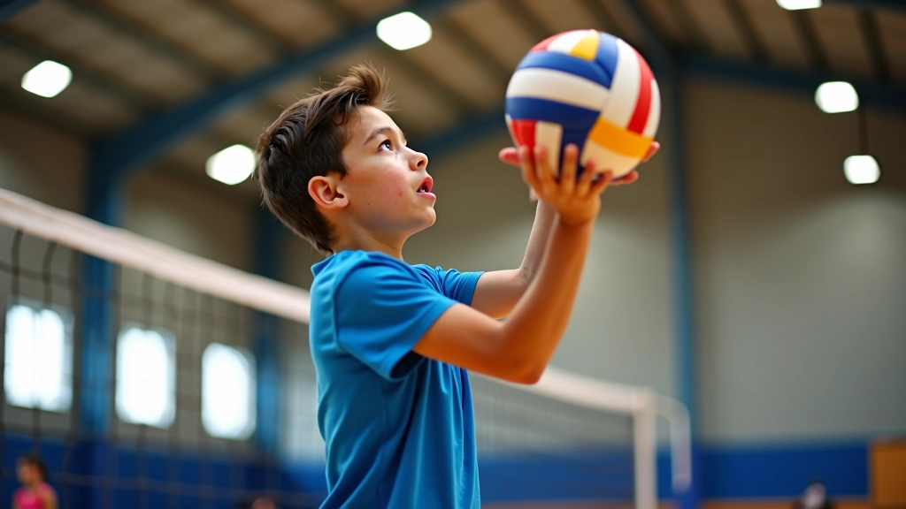
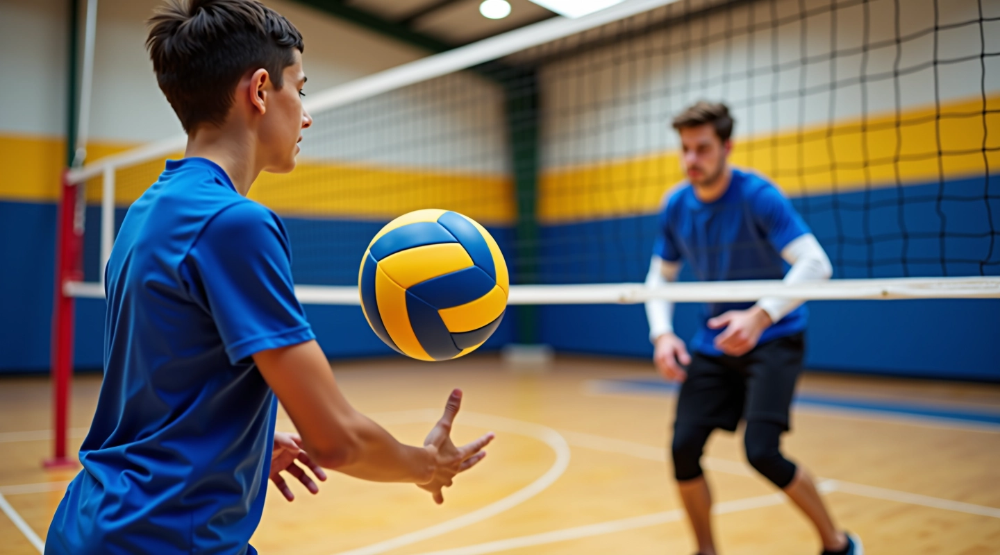
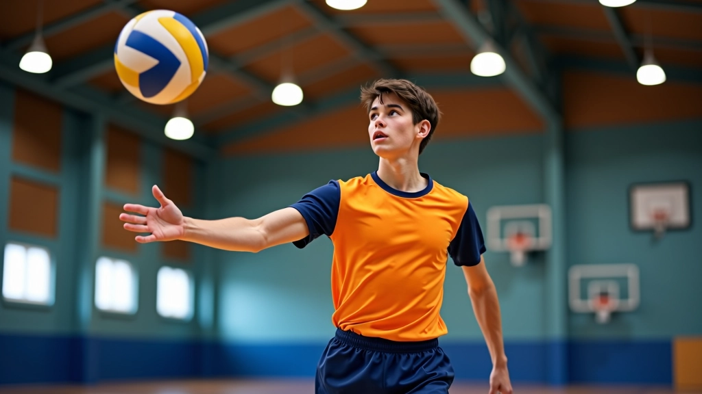
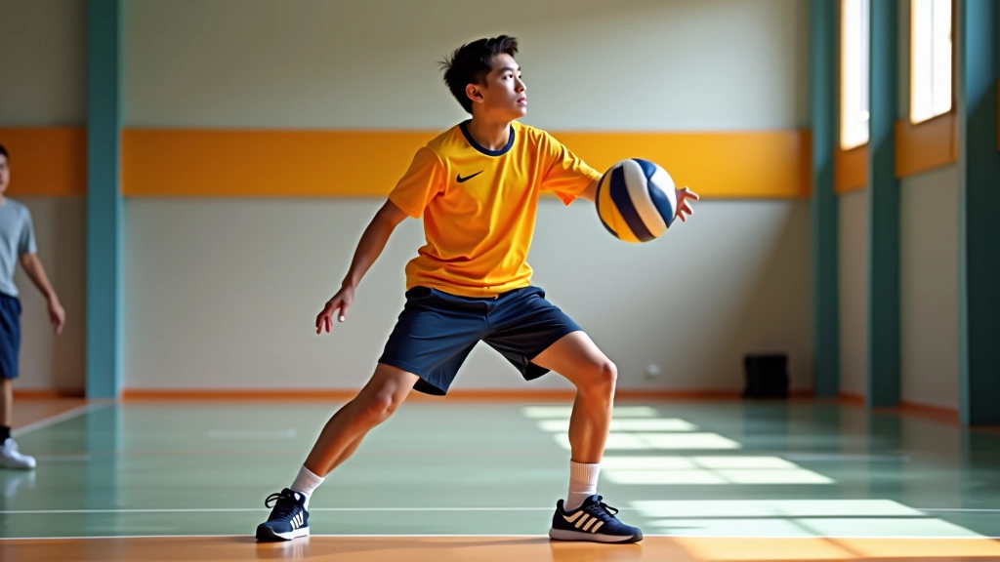
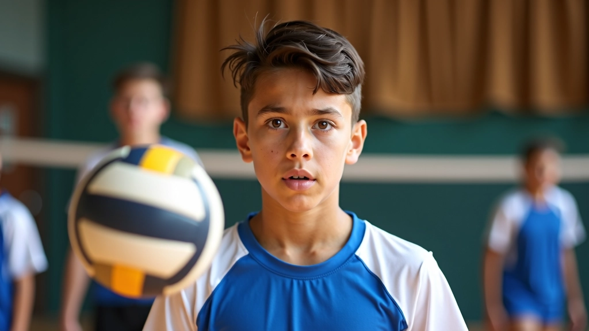
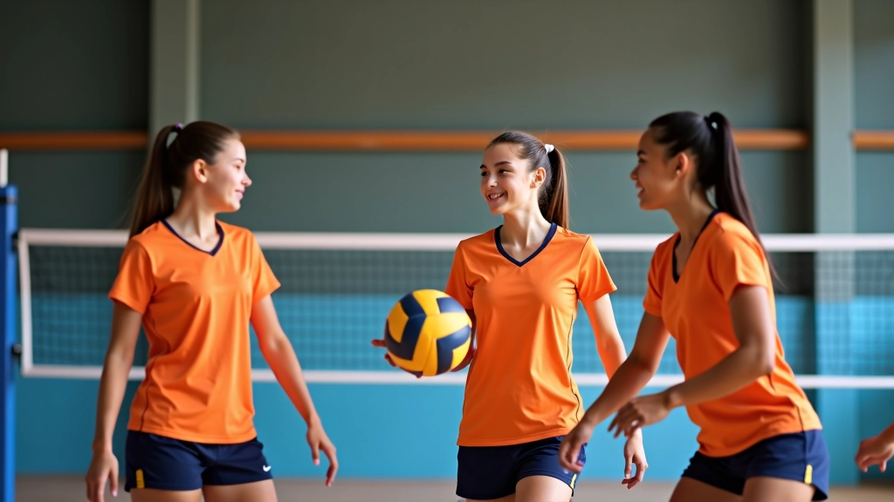

تطوير مهارات الإرسال بقوة وسيطرة
اكتشف الأخطاء الشائعة في الإرسال والطرق الفعالة لتصحيحها وزيادة قوة الإرسال مع الحفاظ على الدقة
تعلم كيفية تحسين دقة التمرير من خلال تقنيات صحيحة وتدريبات متكررة تناسب جميع مستويات اللاعبين الناشئين


التمرير هو أساس كل لعبة كرة طائرة ناجحة. ما إن تبدأ اللعبة حتى تحتاج فريقك إلى تمريرات دقيقة وقوية، وهذا لن يأتي من العدم. نحتاج إلى تدريب منتظم، فهم صحيح للتقنية، وممارسة واعية.
سواء كنت مبتدئًا يخطو خطواتك الأولى أو لاعبًا تسعى لتحسين مستواك، هذا الدليل سيرشدك عبر الخطوات الأساسية. لن تصبح خبيرًا بين ليلة وضحاها، لكنك ستلاحظ تحسنًا حقيقيًا في غضون 4-6 أسابيع من التدريب المنتظم.

قبل أن تفكر في تحريك ذراعيك، يجب أن تكون في الموقف الصحيح. قدماك يجب أن تكونا بعرض الكتفين، وركبتاك منثنيتان قليلًا — تخيل أنك تجلس على كرسي عالي جدًا. هذا الموقف يعطيك التوازن والاستقرار الذي تحتاجه.
جسمك يجب أن يكون مسترخيًا لكن متأهبًا. لا تكن متوترًا، لا تجمد في مكانك. الحركة تبدأ من الأسفل — من رجليك وليس من ذراعيك. هذا هو الفرق بين تمرير ضعيف وتمرير قوي. عندما تدفع برجليك، تنقل القوة عبر جسمك بطريقة طبيعية.
نصيحة مهمة: قف أمام المرآة وراقب نفسك. هل قدماك مستقرتان؟ هل ركبتاك منثنيتان بشكل صحيح؟ هذا التقييم الذاتي يساعدك على تصحيح أخطائك مبكرًا.

اليدان هما أداتك الرئيسية. أصابعك يجب أن تشكل مثلثًا صغيرًا مع الكرة. ابدأ بجعل أصابعك متشابكة بشكل طبيعي، ثم افتح يديك قليلًا لتشكيل شكل كوب. الكرة تستقر على أطراف أصابعك — وليس على راحتي يديك.
ذراعاك يجب أن تكونا معًا، مشدودتين لكن ليس بقوة شديدة. عندما تستقبل الكرة، تتحرك ذراعاك معًا كوحدة واحدة. هذا يعطيك السيطرة والدقة. كثير من المبتدئين يحركون كل ذراع بشكل منفصل — هذا خطأ شائع يقلل من دقتك.
القوة تأتي من تمديد رجليك وذراعيك معًا في نفس الوقت. تخيل أنك تدفع الكرة بقوة من خلال جسمك بأكمله، لا من ذراعيك فقط.
هذا الدليل يقدم معلومات تعليمية عن تقنيات التمرير في الكرة الطائرة. الحركات والتقنيات المذكورة هنا موجهة للتعلم الذاتي والفهم الأفضل. لتحقيق أفضل النتائج، يُنصح بالتدريب تحت إشراف مدرب متخصص يمكنه تقييم أدائك الفردي وتقديم ملاحظات شخصية.
عينك لا تترك الكرة للحظة واحدة. من اللحظة التي ترى فيها الكرة قادمة نحوك حتى تغادر يديك، يجب أن تكون عينك عليها. هذا يُسمى بـ "تتبع الكرة"، وهو أساسي جدًا.
رأسك يجب أن يبقى ثابتًا. لا تحرك رأسك بعيدًا عن الكرة. كثير من اللاعبين الشباب يرمون رؤوسهم للخلف أثناء التمرير — هذا يقلل من دقتك. ابق ركيزًا، شاهد الكرة، وأرسلها بثقة.
النظر ليس فقط عن الرؤية البصرية. إنه أيضًا عن قراءة لعبة. قبل أن تستقبل الكرة، تكون قد قررت بالفعل إلى أين ستمررها. هذا يأتي مع الممارسة والخبرة.

اتبع هذه الخطوات الخمس بترتيب لإتقان التمرير:
قدماك بعرض الكتفين، ركبتاك منثنيتان قليلًا، وزنك على كرات قدميك.
أصابعك متشابكة بشكل طبيعي، تشكل شكل كوب يستقبل الكرة.
الكرة تلمس أطراف أصابعك، يداك معًا، ركبتاك تنثنيان أكثر قليلًا.
افرد رجليك وذراعيك معًا في نفس الوقت، وليس بالتسلسل.
الكرة تغادر يديك بسلاسة، أصابعك موجهة نحو الهدف.

التدريب المنتظم هو السر. لا يكفي أن تفهم التقنية فقط — يجب أن تمارسها. نوصي بـ 30-45 دقيقة من تمارين التمرير ثلاث مرات في الأسبوع على الأقل.
لا تتوقع أن تصبح محترفًا في أسبوع واحد. لكن بعد 4-6 أسابيع من التدريب المنتظم، ستلاحظ تحسنًا واضحًا في دقتك وقوتك. الأهم من ذلك، ستصبح أكثر ثقة بنفسك.
التمرير ليس مهارة معقدة، لكنها تحتاج إلى التركيز والممارسة. الموقف الصحيح، تشكيل اليدين، تتبع الكرة، والحركة المنسقة — هذه هي الأساسيات. عندما تتقن هذه الأساسيات، ستصبح تمريراتك أقوى وأكثر دقة.
ابدأ الآن. لا تنتظر. خذ كرة وابدأ بممارسة الخطوات الخمس. اطلب من صديق أن يكون شريكك في التدريب. تدرب ثلاث مرات في الأسبوع وراقب التحسن. بعد بضعة أسابيع، ستندهش من مدى تحسنك.
هل تريد تحسين مهاراتك أكثر؟ تابع قراءة مقالاتنا الأخرى عن الإرسال والتكتيك واللياقة البدنية. كل مهارة تضيفها تجعلك لاعبًا أفضل.
اكتشف المزيد من الأدلة والتقنيات لتطوير مهاراتك

اكتشف الأخطاء الشائعة في الإرسال والطرق الفعالة لتصحيحها وزيادة قوة الإرسال مع الحفاظ على الدقة

تعرف على أهم التمارين اللياقية والتدريبات الخاصة بلاعبي الكرة الطائرة لتحسين القوة والتحمل

تعلم الخطط التكتيكية الأساسية والمتقدمة لتحسين قدرات الفريق على القراءة والاستجابة